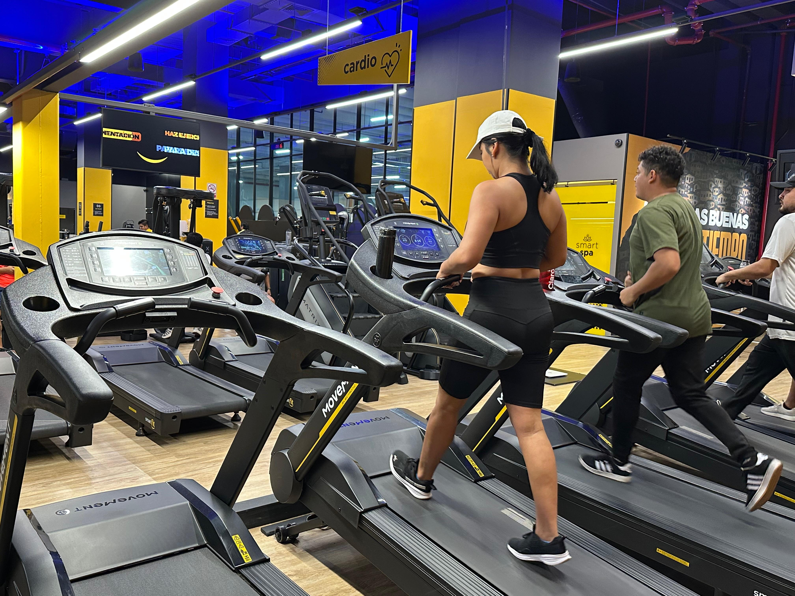

Beneficios de la
actividad física
Conoce cómo la actividad física puede contribuir al bienestar físico y mental, y descubre alternativas deportivas disponibles en la comunidad, como los gimnasios.

La importancia de mantenerse activo
La actividad física es una parte importante de un estilo de vida saludable. Incorporar el movimiento a la rutina diaria puede ayudar a mejorar la condición física, fortalecer los músculos y favorecer el bienestar general. En la comunidad existen distintas alternativas para mantenerse activo, entre ellas los gimnasios, que permiten realizar ejercicios de fuerza y resistencia.
Entrenamiento de fuerza
Los ejercicios de fuerza ayudan a desarrollar y mantener la masa muscular, fortalecer los huesos y mejorar la capacidad para realizar actividades cotidianas. Los gimnasios son una de las alternativas para practicar este tipo de entrenamiento mediante ejercicios con pesas, máquinas o el propio peso corporal, de acuerdo con las posibilidades y necesidades de cada persona.
Resistencia cardiovascular
Las actividades cardiovasculares, como caminar, correr, montar bicicleta o utilizar equipos de ejercicio, contribuyen a mejorar la resistencia física y la salud del corazón. Practicarlas de forma regular puede favorecer la circulación y ayudar a mantener un estilo de vida activo.
El gimnasio como alternativa deportiva
Para quienes buscan un lugar donde realizar actividad física, un gimnasio puede ser una opción a considerar. Cairo Gym es uno de los establecimientos que se pueden conocer dentro de la oferta deportiva de Guayaquil. Informarse sobre su ubicación, sus instalaciones y las actividades disponibles permite a cada persona evaluar si se ajusta a sus intereses y necesidades.
Actividad física para la comunidad
Promover el conocimiento de las alternativas deportivas de la comunidad puede motivar a más personas a incorporar el ejercicio en su vida diaria. No es necesario comenzar con rutinas exigentes: elegir una actividad adecuada al nivel físico de cada persona y practicarla de manera constante puede ser un buen primer paso hacia hábitos más saludables.